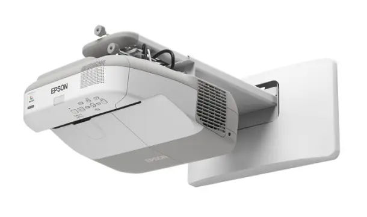

Интерактивные проекторы
Благодаря короткому фокусу, лектор или учитель не перекрывает изображение, а высокая яркость позволяет заниматься в условиях естественного освещения. Модели серии поддерживают интерактивное взаимодействие с изображением с помощью стилуса или даже пальца, а также добавление заметок и комментариев с помощью смартфона и легкий обмен информацией между учащимися и учителем без дополнительных устройств.